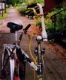
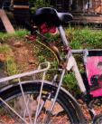
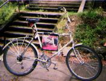

I knew who Fred Nemo was because he helped organize the (successful!) Portland Critical Mass lawsuit against the cops, and compiled a little book of information about the case for us. We didn't quite recognize each other, however, when Bucephalus and I were zipping downhill on Roosevelt Ave. in Seattle, while he and his bike were cruising uphill. He gave me a wave, however, and I was startled enough to turn around and catch up to him. Turns out he's a little extra-friendly to other posture-conscious cyclists.
  
Mr. Nemo knows well the pleasures of upright cycling, and has modified his ride accordingly. His front handlebar is a single lever, about half a foot above saddle height. It acts like a very short tiller. Because upright cycling tends to unload the front wheel, this handle is quite adequate to turn the wheel without wrist strain. Another handle is attached to the seatstays, and it is here that the rear brake lever is placed. Fred usually uses this when riding down hills or when a little extra stability is required. The record jacket inside the front triangle is used to store important documents.
The experienced cyclist will surely note that this is not a wheel to take when battling traffic or whizzing between busses. The cyclist who is well-rounded as well as experienced, however, will add that there is much more to life than a constant crouch over one's handlebars.
I have seen Fred zig and zag at the head of a Critical Mass column, and I have seen the similarly modified Bianchi folder that he rode through Europe while touring with Hazel, and I can only feel privileged to witness the inspiring and unique riding style exemplified by Fred Nemo, Wheelman.